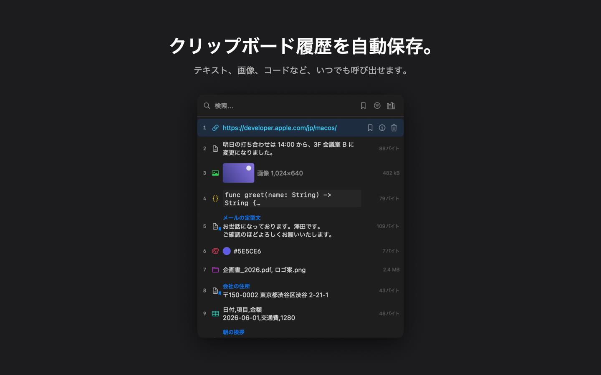
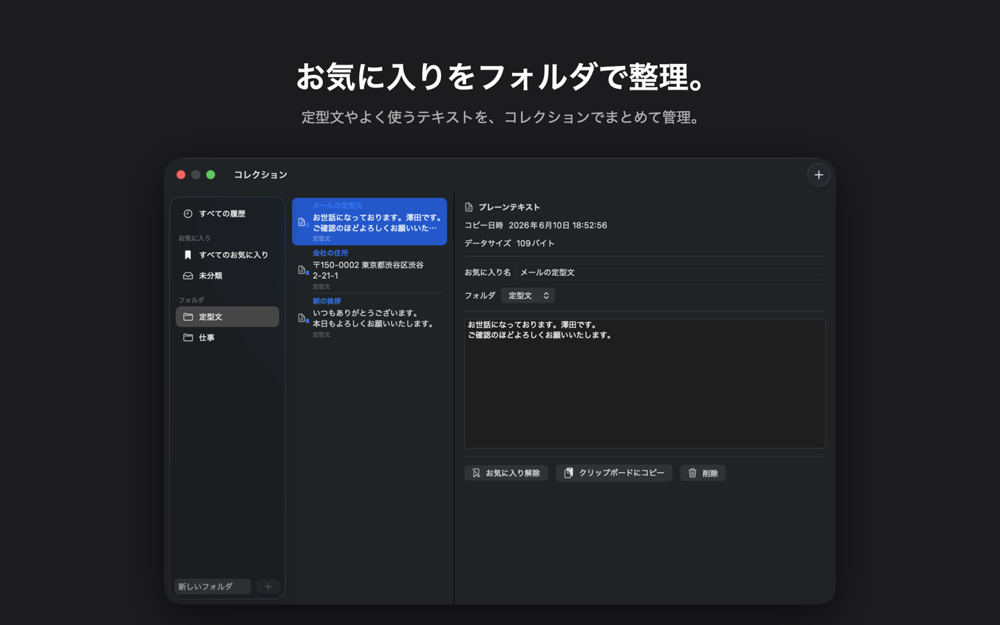

コピーは消えない。整えて、また呼び出す。
クリップボード履歴
コピーした内容を自動で保存。テキスト・画像・ファイル・カラーまで、あらゆる種類のデータに対応します。
ホットキーで瞬時に
グローバルホットキーで履歴パネルを即座に表示。どのアプリを使っていても、選んでそのまま貼り付けられます。
お気に入りと定型文
よく使う定型文やコードを登録すれば、ホットキーから何度でも呼び出せます。自分で作ったフォルダに整理して、Tab / Shift+Tab で素早く切り替え。
コレクション画面
全データを一覧で管理。サイドバーで履歴・お気に入り・フォルダを切り替え、複数選択してまとめて移動・削除。コピーしていない定型文を新しく書き起こすこともできます。
11種類に自動で仕分け
コピーした瞬間に種類を判別。フィルターで目的のものだけを絞り込めます。
あなたの Mac から出ない
履歴はすべてローカル保存。外部サーバーへの送信もトラッキングもありません。パスワードマネージャーなどが機密マークを付けてコピーしたものは、最初から記録しません。
※ アイテムを選ぶと同時に自動で貼り付けたい場合は、システム設定 ▸ プライバシーとセキュリティ ▸ アクセシビリティで Clipnyx を許可してください。許可しなくても、選んだアイテムは ⌘V で貼り付けられます。
メニューバーから、ひと呼吸で。


OS のクリップボードは、短期記憶。Clipnyx は、長期記憶。
ずっと残る
直近の数件で消えてしまう標準機能と違い、件数も期間も気にせず遡れます。お気に入りは件数制限の外。
自分の手で整う
フォルダで分け、名前を付け、ドラッグで動かす。よく使う定型文を、自分の星座のように並べておけます。
日本語のために
日本語 UI と日本語入力での検索を、はじめから丁寧に。日本語で使うことを前提に作られています。
どちらも無料。好きな方法でどうぞ。
App Store
ワンタップでインストール。アップデートは App Store にお任せ。
ダウンロード / Homebrew
アプリ自身が自動でアップデート。Homebrew からも導入できます。
brew install sawasige/clipnyx/clipnyx